Na segunda (23), a Câmara aprovou o PLP 299 por 353 a 128, com 5 abstenções, e rejeitou os 7 destaques. Agência Brasil e Money Times relataram a sanção na terça; a publicação oficial não foi localizada até o fechamento. Pág. 2.
O dólar chegou a R$ 6,006 na segunda e terminou a terça em R$ 5,911. O Ibovespa caiu 0,43%, a 164.089 pontos, com Vale em queda de 5,51%. Pág. 4.
Hemoce de Sobral atende de segunda a sexta, das 8h às 19h. Pág. 31.
💜 Dia pela Eliminação da Violência contra a Mulher: Ligue 180. Págs. 7, 26–27.
💊 Morte encefálica · tireoide · tamponamento · TSV · assincronias (8–10) · 📜 Arcanos (24–25) · 🤝 Humanitário (31).
A votação. Na noite de segunda (23), a Câmara aprovou o PLP 299/2026 por 353 votos a 128, com 5 abstenções; eram necessários 257. Os 7 destaques foram rejeitados e o texto aprovado pelo Senado ficou como estava, sem nova votação pelos senadores. O relator foi o deputado Mauro Benevides Filho (União-CE), segundo InfoMoney e CNN Brasil.
O que muda. Nos anos de contenção, o teto de crescimento real da despesa primária cai de 2,5% para 2%. Há corte adicional de 10 pontos percentuais em benefícios fiscais, compensação da Lei Kandir de R$ 2 bilhões por ano até 2030 e até R$ 10,5 bilhões do subsídio ao diesel de 2026 fora da meta. O Executivo estima impacto de R$ 45,1 bilhões a R$ 50,1 bilhões em 2027.
Reações. O presidente da Câmara, Hugo Motta, disse que o resultado é "mais uma demonstração" de responsabilidade fiscal do Congresso. A CNI criticou a transferência do custo para setores produtivos (Money Times).
Próximo passo. Reportagens da CNN Brasil e do Times Brasil dizem que o governo prepara uma PEC para limitar despesas obrigatórias. O presidente do Senado, Davi Alcolumbre, vê chance de votação ainda em 2026 se houver acordo.
Big Techs. A votação do PL 4675/2025, sobre concorrência em plataformas digitais, foi marcada para terça, 1º/12. O novo parecer do relator Aliel Machado (PV-PR) restringe poderes do Cade e inclui garantias à liberdade de expressão; cinco frentes parlamentares se opõem (Congresso em Foco, 24/11).
STF. O ministro Nunes Marques foi sorteado relator de ação da defesa de Daniel Vorcaro que questiona a concentração, na Presidência da Corte, dos casos ligados ao Banco Master e ao INSS. A defesa pede que o tema vá ao decano. Sobre a escala 6×1, a decisão liminar que manteve a nova jornada a partir de 16/12 aguarda o fim do referendo no plenário virtual.
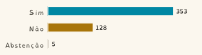
Reeleito em 25/10, o presidente Lula toma posse em 1º/1/2027. Até o fechamento, nenhum ministro foi anunciado oficialmente. Reportagens citam nomes cotados, sem confirmação do Planalto (O Povo e CNN Brasil, 24/11).
Pagamento de benefícios de novembro e 13º começou em 24/11. Até 1 salário mínimo (R$ 1.621): final 1 em 24/11, finais 2 a 9 de 25/11 a 4/12 e final 0 em 7/12. Acima do mínimo: 1º a 7/12 (Agência Brasil).
Estudo da Abin com o Fórum Brasileiro de Segurança Pública aponta 31 organizações criminosas relevantes e 75 células estaduais no país (Agência Brasil, 24/11).
A nº 018 situou a votação do texto-base na terça; ela ocorreu na segunda, 23/11, e os destaques também foram rejeitados naquela noite.
O jornal não toma partido. Publica fatos, números oficiais e declarações atribuídas, com o mesmo tratamento a todos os lados.
Sobral. A prefeitura divulgou na terça (24) um mutirão de cirurgias de túnel do carpo no Hospital Estevam Ponte. Na mesma semana, exames de ultrassom e ecocardiograma passam a ser feitos em 8 Centros de Saúde da Família, sem deslocamento ao centro. O Refis 2026 vai até 27/11, com desconto de 100% em juros e multas (sobral.ce.gov.br).
Doação de sangue. A Semana do Doador do Hemoce começou na segunda (23) e vai até domingo (29). Hoje é o Dia Nacional do Doador. No Hemoce de Sobral, no Centro de Convenções, o atendimento é de segunda a sexta, das 8h às 19h, e aos sábados, das 8h às 12h. O hemocentro não publicou boletim de estoque datado. Pág. 31.
Mpox. O Ceará tinha 175 casos confirmados em 2026 na tarde de 19/11, contra 85 em 14/11 e 18 em 6/11 (IntegraSUS, via Diário do Nordeste). Fortaleza concentra 145, Caucaia 7 e Sobral 4. A nº 018 citou 205 casos; o número não foi reconferido em documento oficial no fechamento.
Estiagem. O decreto estadual de 13/11 pôs 65 municípios em situação de emergência por 180 dias. A Funceme classifica o El Niño como muito forte e vê cenário desfavorável para a quadra chuvosa de 2027. A previsão mais recente consultada, de 18/11, indicava máximas de 30 a 38 °C e nenhuma chuva relevante.
Violência contra a mulher. De janeiro a setembro, o Ceará registrou 29 feminicídios, contra 35 no mesmo período de 2025; 55% com arma branca (Supesp, via Diário do Nordeste, 9/11). Em Sobral, o TJCE mantém um núcleo de enfrentamento à violência doméstica.
13º no estado. O Dieese estima que o 13º salário injete R$ 11 bilhões na economia cearense, para cerca de 3,6 milhões de pessoas (O Povo, 12/11).
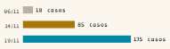
Conteúdo educativo. Siga o protocolo institucional.
O governador Elmano de Freitas pretende definir o secretariado do novo mandato em dezembro (O Povo, 9/11).
Tendência de calor forte e tempo seco. Água por perto, protetor solar e pausa à sombra.
Campanha estadual recebe brinquedos novos até 30/11 em prédios públicos. Pág. 31.
Notícias da Câmara de Sobral, da Santa Casa e do HRN entram aqui quando houver fonte datada.
Câmbio. O dólar abriu a R$ 5,955, foi a R$ 5,801 por volta das 10h50 e fechou em R$ 5,911, queda de 0,26%. A Agência Brasil associou o alívio à sanção do pacote fiscal e à expectativa de uma PEC para despesas obrigatórias.
Bolsa. O Ibovespa fechou em 164.089,81 pontos (−0,43%). A Vale caiu 5,51%, a R$ 55,19. A Petrobras recuou 1,82%, a R$ 40,55, depois que a presidente da estatal, Magda Chambriard, não garantiu dividendos extraordinários; o plano 2027–2031 prevê cerca de US$ 122 bilhões em investimentos.
Juros. A Selic está em 13,75% desde a pausa de 4/11, que interrompeu os cortes iniciados em março. Na segunda, o DI para janeiro de 2027 fechou em 13,699% e o de 2033 em 15,345% (InfoMoney). O IPCA de outubro subiu 0,14% e acumula 4,63% em 12 meses, acima do teto da meta de 4,5%.
Expectativas. No Focus de 16/11, o último reconferido, o mercado projetava IPCA de 5,11% em 2026 e 5,00% em 2027, Selic de 13,75% no fim de 2026 e 12,75% no fim de 2027, PIB de 1,72% e dólar a R$ 5,40. O Focus de 23/11 não foi reconferido no fechamento.
Exterior. Dow Jones +0,86% (50.021 pontos), S&P 500 −0,49% e Nasdaq −1,48%, com pressão sobre tecnologia (Money Times). O petróleo subiu com incidentes em Ormuz e ameaças a instalações sauditas. No Fed, o diretor Christopher Waller disse em 10/11 que defenderá alta de ao menos 0,25 ponto em dezembro.
Comércio. Os EUA bloquearam na OMC o painel pedido pelo Brasil contra tarifas de 25% e 12,5%, e a União Europeia adiou decisão sobre aves e mel brasileiros (Money Times, 24/11).
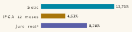
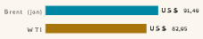
Golfo. O Irã fez em meados de novembro o terceiro ataque em uma semana ao Bahrein, com drones contra um radar dos EUA na base de Sheikh Isa; o Bahrein disse ter interceptado as munições (NPR e Vatican News, 17/11). Os EUA mantêm bloqueio naval aos portos iranianos. Na terça (24), o Brent subiu 2,27% com novos incidentes em Ormuz, segundo a Agência Brasil.
Polônia e Otan. Promotores poloneses concluíram, em caráter preliminar, que os três objetos que entraram no país em 20/11 eram mísseis de cruzeiro russos Kh-101, sem vítimas. O Conselho do Atlântico Norte se reuniu na segunda (23). Uma declaração final não foi localizada no fechamento.
Ucrânia. Em 17/11, na sede da Otan, aliados prometeram mais de US$ 10 bilhões em armas americanas pelo programa PURL; a Alemanha anunciou US$ 300 milhões para mísseis Patriot com a Noruega (Stars and Stripes). As conversas com enviados dos EUA seguem sem cessar-fogo.
Gaza. O Exército israelense operou a oeste da chamada Linha Amarela, que marca mais de 60% do território sob controle de Israel (Just Security, 19/11). O cessar-fogo de outubro de 2025 segue com ataques e mortes relatados pelas duas partes.
Ásia. A premiê japonesa Sanae Takaichi disse que a posição do Japão sobre Taiwan "não mudou" (Reuters, 19/11). A AIEA relatou ampliação do enriquecimento de urânio em Yongbyon, na Coreia do Norte, e a Corte Internacional de Justiça concluiu que Mianmar cometeu genocídio contra os rohingyas.
Comércio. Os EUA bloquearam o painel da OMC pedido pelo Brasil contra tarifas de 25% e 12,5% (Money Times, 24/11).
Esquema fora de escala. No ponto mais estreito, cerca de 39 km separam Irã e Omã; os corredores de navegação têm uns 3 km por sentido. Por ali passa perto de um quinto do petróleo consumido no mundo (EIA).
Números de guerra vêm de partes em conflito. O jornal atribui cada dado à fonte e não toma lado.
As Mirabal eram chamadas de Las Mariposas. O assassinato, simulado como acidente de carro, aumentou a rejeição à ditadura, que caiu meses depois com a morte de Trujillo, em 1961. Em 1981, um encontro feminista latino-americano em Bogotá escolheu a data; a ONU a oficializou em 1999.
Ebola. Na atualização de 19/11, com dados até 17/11, o ECDC contava 11.504 casos confirmados e 5.630 mortes na RD Congo, em 8 províncias; o Quênia tem 9 casos e a Nigéria 1 importado. O surto foi declarado em 15/05/2026, e a OMS declarou emergência internacional dois dias depois.
Sem controle. Segundo o Africa CDC, mais de 80% dos casos novos surgem fora das listas de contatos e mais de 65% das mortes ocorrem na comunidade. Só US$ 1,3 bilhão dos US$ 2,9 bilhões prometidos foi liberado (Al Jazeera, 15/11). O ensaio de vacina TUMAINI, de fase 2/3, recruta em Bunia desde 23/10.
H5N1. A agência britânica UKHSA registrou 2 novos casos humanos em Yakima, nos EUA, com 1 morte. Desde 2024 são 72 casos de H5 em humanos no país, 42 ligados a rebanhos leiteiros.
Novembro Azul. O INCA estima 77.920 casos novos de câncer de próstata por ano no triênio 2026–2028, o tumor mais frequente em homens depois do de pele não melanoma. Idade acima de 60 anos, pai ou irmão com diagnóstico antes dos 60 e obesidade elevam o risco. A decisão sobre rastreamento com PSA deve ser conversada com o médico.
Violência contra a mulher. O Anuário Brasileiro de Segurança Pública de 2026 registrou 1.571 feminicídios em 2025, o maior número desde 2015, segundo a imprensa. Para o serviço de saúde, a lei é clara: a violência contra a mulher atendida é de notificação compulsória (Lei 10.778/2003), e casos com indícios devem ser comunicados à autoridade policial em até 24 horas (Lei 13.931/2019).
Doar sangue. Pode doar quem tem de 16 a 69 anos (de 60 a 69 só quem já doou antes), pesa 50 kg ou mais, dormiu ao menos 6 horas, está alimentado e leva documento com foto (Ministério da Saúde). Pág. 31.
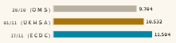
Siga o protocolo institucional.
ImmunoSep (JAMA, 2026): imunoterapia guiada por biomarcador na sepse melhorou o SOFA no dia 9 (35,1% × 17,9%), sem diferença de mortalidade em 28 dias. Hipótese promissora, não conduta.
| Passo | O que fazer | ⚠️ Pegadinha de prova |
|---|---|---|
| 1. Pré-requisitos | Lesão encefálica de causa conhecida e irreversível; sem fatores tratáveis que confundam; observação hospitalar ≥ 6 h (≥ 24 h na encefalopatia hipóxico-isquêmica). | Pós-PCR exige 24 h de observação, não 6 h. |
| 2. Fisiologia mínima | Temperatura central > 35 °C, SpO₂ > 94% e, no adulto, PAS ≥ 100 ou PAM ≥ 65 mmHg. | Hipotermia e choque impedem iniciar o protocolo: aqueça e estabilize antes. |
| 3. Dois exames clínicos | Coma não perceptivo e ausência de reflexos do tronco (fotomotor, córneo-palpebral, oculocefálico, vestíbulo-calórico e tosse), por dois médicos diferentes e capacitados. | Reflexos medulares, como a tríplice flexão, não excluem morte encefálica. |
| 4. Teste de apneia | Pré-oxigenar com FiO₂ 100%, desconectar com O₂ traqueal e observar; positivo se PaCO₂ > 55 mmHg sem movimento respiratório. Basta um teste. | Instabilidade durante o teste: interromper e usar o exame complementar no tempo devido. |
| 5. Exame complementar | Obrigatório: angiografia, Doppler transcraniano, cintilografia ou EEG, conforme idade e disponibilidade. Notificar a Central Estadual de Transplantes. | Hora do óbito = conclusão do último procedimento. Quem diagnostica não integra a equipe de transplante. |
Conteúdo educativo. Siga o protocolo institucional.
Homem de 34 anos, TCE grave há 10 h, Glasgow 3, pupilas fixas. Temperatura de 34,6 °C e PAM de 58 mmHg com noradrenalina. A equipe quer abrir o protocolo agora. Resposta: ainda não. Reaquecer acima de 35 °C, ajustar o vasopressor até PAM ≥ 65 e rever sedativos; só então o primeiro exame. Ao abrir, comunicar a família e a CET.
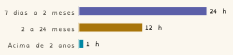
Hipotermia e intoxicação por depressores do SNC (barbitúricos, baclofeno).
Síndrome do encarceramento: consciente, comunica-se pelo olhar vertical.
Guillain-Barré fulminante e encefalite de tronco: reflexos somem, cérebro funciona.
| Passo | O que fazer | ⚠️ Pegadinha de prova |
|---|---|---|
| 1. Suspeitar | Febre, taquicardia ou FA, agitação, icterícia e gatilho (infecção, cirurgia, parto, iodo, suspensão de remédio). Escore de Burch-Wartofsky ≥ 45 sugere crise. | Não espere o T4 livre para tratar o paciente grave. |
| 2. Bloquear o efeito | Propranolol 60–80 mg VO a cada 4 h (ATA 2016); na IC descompensada, betabloqueador de curta ação com cautela. | Propranolol também reduz a conversão de T4 em T3. |
| 3. Bloquear a síntese | PTU 500–1.000 mg de ataque e 250 mg a cada 4 h, ou metimazol 60–80 mg/dia. Iodo (SSKI 5 gotas a cada 6 h) só ≥ 1 h depois. | Iodo antes da tionamida vira matéria-prima para mais hormônio. |
| 4. Suporte | Hidrocortisona 300 mg IV e 100 mg a cada 8 h; resfriamento, volume, tratar o gatilho. | Evite AAS como antitérmico: desloca T4 da proteína carreadora. |
| 5. Coma mixedematoso | Levotiroxina IV 200–400 µg de ataque e depois 1,6 µg/kg/dia (reduzir ~25% na via IV), com hidrocortisona 100 mg a cada 8 h; aquecer passivamente, corrigir sódio e glicose, ventilar se preciso (ATA 2014). | TSH normal não exclui causa central. Aquecimento ativo agressivo pode precipitar colapso. |
Conteúdo educativo. Siga o protocolo institucional.
Mulher de 38 anos com doença de Graves sem tratamento, 2º dia de pós-operatório: 40 °C, FA a 160 bpm, agitação e icterícia. Escore de 70. Conduta: UTI, betabloqueador, PTU, iodo uma hora depois, hidrocortisona, resfriamento e busca de infecção. Anticoagulação da FA conforme risco.
Causa hipo ou hipertireoidismo (tipos 1 e 2). Dose o TSH antes e a cada 6 meses.
Pode precipitar tireotoxicose em bócio nodular. Pergunte antes da tomografia.
No 1º trimestre, PTU é preferido; depois, metimazol.
Na janela subcostal, o derrame aparece como faixa anecoica em volta do coração. Os sinais de tamponamento são o colapso sistólico do átrio direito (precoce e sensível), o colapso diastólico do ventrículo direito (mais específico) e a veia cava pletórica, acima de 2,1 cm e com colapso abaixo de 50%. Ao Doppler, variação respiratória do fluxo mitral acima de 25% reforça. O diagnóstico final é clínico: hipotensão, turgência jugular e pulso paradoxal. No mixedema, o derrame pode ser grande e sem tamponamento, porque se acumula devagar.
⚠️ Pegadinha: faixa só anterior e ecogênica costuma ser gordura epicárdica. No paraesternal longo, o derrame pericárdico passa na frente da aorta descendente; o pleural fica atrás.
Taquicardia regular de QRS estreito, em geral de 150 a 250 bpm, com P escondida ou retrógrada (pseudo-r' em V1). No paciente estável, a Valsalva modificada, com elevação das pernas logo após o esforço, reverteu 43% contra 17% da manobra padrão no estudo REVERT. Se falhar, adenosina 6 mg IV em bolus rápido com flush e, se preciso, 12 mg. Instável: cardioversão elétrica sincronizada. Na tireotoxicose, a taquicardia costuma ser sinusal ou FA: trate a causa.
⚠️ Pegadinha: FC fixa em 150 pode ser flutter 2:1; a adenosina revela as ondas F e não reverte. Taquicardia irregular e larga com pré-excitação: não use bloqueador do nó AV.
Esforço ineficaz: o paciente puxa, a pressão cai e o fluxo se mexe, mas o ventilador não dispara; pense em auto-PEEP ou suporte excessivo. Duplo disparo: dois ciclos seguidos sem expirar, por fome de ar ou tempo inspiratório curto, somando volume alto. Autodisparo: ciclos sem esforço, por vazamento, água no circuito, oscilação cardíaca ou sensibilidade alta demais. Um índice de assincronia acima de 10% foi associado a ventilação mais longa (Thille, 2006).
⚠️ Pegadinha: o autodisparo pode parecer respiração espontânea no paciente em avaliação de morte encefálica; por isso o teste de apneia é feito desconectado.
Sinal mais específico de tamponamento no eco? Colapso diastólico do VD.
Primeira dose de adenosina na TSV? 6 mg em bolus rápido.
Ciclos sem esforço com vazamento no circuito? Autodisparo.
OpenAI. Em 17/11, a empresa lançou o GPT-6.2 Astra, para trabalho profissional, e o GPT-6.2 Sol, para uso diário; a API do Astra custa US$ 8 por milhão de tokens de entrada e US$ 40 na saída, 20% menos que o modelo anterior. Os ganhos de desempenho são números da própria empresa. Em 23/11, o Sol chegou à aba de conversa do ChatGPT (MacRumors).
Meta e Google. Segundo manchetes do MacRumors, o agente pessoal Muse, da Meta, chegou ao Reino Unido em 24/11, e a busca do Google ganhou acesso à Carteira, com o Drive "em breve" (23/11).
Anthropic. A empresa estreou na Nasdaq em 19/11, com oferta a US$ 83; a ação abriu a US$ 111,50 e fechou o 1º dia a US$ 97,17 (NeoFeed). Os veículos divergem sobre o valor de mercado. Este jornal é produzido com o Claude, da Anthropic.
Apple. O iOS 27.2, de 26/10, trouxe a Siri com IA em português e memória de conversas. O 27.2.1, de 18/11, corrigiu falhas da Siri, e as betas públicas do iOS 27.3 e do macOS 27.3 saíram em 19/11.
Windows e Android. A atualização de novembro do Windows 11 (KB5132061) trouxe menu de contexto personalizável e o Cloud Rebuild, que reinstala o sistema pelo Windows Update, sem pendrive. A versão 23H2 recebeu a última atualização. O Android 17 QPR2 chegou aos Pixel em 10/11, com correção de mais de 200 falhas.
Ataques no Brasil. Em novembro, o Tesouro relatou acesso a cerca de 30 mil cadastros; a Caixa Vida e Previdência, a dados de 7,6 milhões de clientes, sem senhas; e a autoridade portuária de Santos, a um ransomware, com operação normal (O Povo, 17/11). Dado vazado vira isca de golpe. Pág. 21.
O PL 2338/2023, que regula a IA no Brasil, foi aprovado no Senado e está em comissão especial na Câmara; nova data de votação não foi confirmada. Na UE, parte das regras de alto risco do AI Act foi adiada.
Ative chaves de acesso (passkeys) no e-mail e no banco: entram com o rosto ou a digital e não podem ser digitadas em site falso.
Hoje. O Atlético-MG, 7º com 51 pontos, recebe o Corinthians, 17º com 40, no jogo adiado da 36ª rodada, às 20h. O Corinthians está um ponto acima do Internacional, primeiro time da zona de rebaixamento.
Terça. A Chapecoense, já rebaixada, recebeu o Palmeiras na Arena Condá, às 18h, pela 37ª rodada. O resultado entra na próxima edição.
O campeão. O Flamengo é campeão desde sábado (21), com 80 pontos após o 1 a 1 com o Palmeiras. Volta a campo no domingo (29), às 16h, contra o Coritiba. A permanência do técnico Leonardo Jardim não foi confirmada pelo clube. Propostas por jogadores só serão analisadas depois do fim do campeonato, segundo a imprensa.
A degola. Remo (32) e Chapecoense (21) estão rebaixados. A briga pela última vaga envolve Internacional (38), Corinthians (40), Mirassol e Grêmio (41), Botafogo (43) e Vitória (44).
A maratona do Palmeiras. Final da Libertadores no sábado (28), às 17h, contra o Estudiantes, no Centenário, em Montevidéu; final da Copa do Brasil contra o Grêmio em 6/12, no Mané Garrincha.
Seleção. A equipe de Carlo Ancelotti fechou 2026 com derrota de 3 a 2 para o Japão e 7 a 0 sobre Singapura. Ancelotti disse que 2027 será ano de renovação.
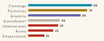
| 1 Flamengo © 80 | 11 Coritiba 45 |
| 2 Palmeiras 74 | 12 São Paulo 45 |
| 3 Cruzeiro 66 | 13 Vitória 44 |
| 4 Fluminense 63 | 14 Botafogo 43 |
| 5 Athletico-PR 57 | 15 Grêmio 41 |
| 6 Bahia 54 | 16 Mirassol 41 |
| 7 Atlético-MG* 51 | 17 Corinthians* 40 |
| 8 Bragantino 50 | 18 Internacional 38 |
| 9 Santos 50 | 19 Remo ↓ 32 |
| 10 Vasco 47 | 20 Chapecoense ↓ 21 |
Qui 26: São Paulo × Remo (20h). Sex 27: Fluminense × Cruzeiro (20h). Sáb 28: Botafogo × Bahia (21h). Dom 29: Coritiba × Flamengo (16h), Vitória × Santos, Corinthians × Grêmio, Internacional × Bragantino, Mirassol × Athletico-PR e Atlético-MG × Vasco. A 38ª rodada é em 2/12.
Fortaleza. O Leão perdeu a ida do playoff para o Criciúma por 1 a 0. Na volta, sábado (28), às 20h, no Castelão, qualquer vitória garante o acesso, porque a melhor campanha desempata a favor do time cearense. Mais de 36 mil ingressos já foram confirmados. O técnico Paulo Autuori tem desfalques: Miritello está suspenso, e seis jogadores se recuperam de lesão (O Povo e Diário do Nordeste). O acesso vale cerca de R$ 200 milhões, segundo coluna do O Povo.
Sobral. O Vila Real goleou o Atlético Cearense por 5 a 1 no Estádio do Junco e garantiu vaga na semifinal da Taça Fares Lopes (Sobral em Revista, 22/11). Adversário e data ainda não foram divulgados. O clube também subiu para a Série B do Cearense em 2026.
Guarany. O jornal não localizou notícia datada do Guarany de Sobral nesta semana. Um jogo "Guarani × Tirol" pela Fares Lopes está marcado para quinta (26), às 19h, sem confirmação de qual Guarani.
Ceará. O Vozão garantiu a permanência na Série B em 14/11, um ponto acima da zona. Na Fares Lopes, Ceará e Fortaleza usam equipes sub-20 e reservas.
Nordeste. Na Série A, o Vitória (44) recebe o Santos no domingo e o Bahia (54) visita o Botafogo no sábado. O Santa Cruz volta à Série B depois de dez anos. Na Série B, o Sport terminou em 9º e o CRB, em 7º, fora dos playoffs.
Começa em 5/1/2027, com 9 rodadas na 1ª fase e 10 clubes: Ceará, Fortaleza, Ferroviário, Floresta, Horizonte, Icasa, Iguatu, Itapipoca, Maracanã e Maranguape. Clássico-Rei na 7ª rodada, em 31/01, no Castelão.
Notícias do Guarany, do Junco e da base de Sobral entram aqui assim que houver fonte confirmada.
Champions, 5ª rodada. Hoje, às 14h45 (Brasília): Sabah × Barcelona e Slavia Praga × Villarreal. Às 17h: Inter × Stuttgart, Lille × Bayern, Atlético de Madrid × Viking, PSG × Roma, Club Brugge × Liverpool, Sporting × Manchester United e Shakhtar × Fenerbahçe. Na terça, jogaram Arsenal × Borussia Dortmund, Manchester City × Napoli, Real Madrid × PSV, entre outros.
Copa Davis. A fase final vai até domingo (29), em Bolonha. Na terça, Tchéquia × Canadá abriram as quartas. Hoje, a Itália, anfitriã e atual campeã, enfrenta a Coreia do Sul; na quinta, Grã-Bretanha × Alemanha e Áustria × Espanha. O Brasil não se classificou. No domingo (22), Carlos Alcaraz venceu Alexander Zverev e ganhou o ATP Finals pela 1ª vez.
F1. Max Verstappen venceu em Las Vegas (21/11), com Lando Norris e Oscar Piastri no pódio; Gabriel Bortoleto, da Audi, foi 12º. Kimi Antonelli, campeão desde o GP do México, soma 402 pontos, e a Mercedes tem o título de construtores. O GP do Catar, em Lusail, é o penúltimo do ano: corrida no domingo (29), às 13h de Brasília.
MotoGP. Marc Márquez garantiu o título em Portimão e igualou os oito títulos de Giacomo Agostini na categoria principal. A temporada termina em Valência no fim de semana.
Brasileiros. João Fonseca encerrou a temporada em outubro, em 40º no ranking. Na Stock Car, a decisão é em Interlagos, de 11 a 13/12.
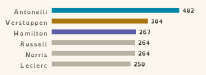
| Sex 27 | Treino livre 1, 10h30 · TL2, 14h |
| Sáb 28 | TL3, 11h30 · Classificação, 15h |
| Dom 29 | Corrida, 13h (57 voltas) |
Sul-Americana: Boca Juniors 2 × 0 Atlético-MG, em Barranquilla (21/11). Libertadores: Palmeiras × Estudiantes, sábado (28), 17h, no Centenário; o Estudiantes eliminou o Flamengo.
Seleção feminina. O Brasil enfrenta o Japão no domingo (29), no Edion Peace Wing, em Hiroshima, e em 5/12, em Okayama, nos últimos amistosos de 2026. Os horários de Brasília não haviam sido divulgados pela CBF nas fontes lidas. Kerolin machucou o pé em 8/11. Sobre Marta, Arthur Elias disse que ela segue nos planos para a Copa do Mundo (O Povo, 10/11).
Temporada. O São Paulo foi campeão brasileiro feminino pela 1ª vez, em 3/10, com 1 a 1 diante do Corinthians, no Morumbis. Em 1/11, em Quito, o Cruzeiro ganhou a 1ª Libertadores Feminina nos pênaltis. Na Copa do Brasil Feminina, o Inter foi campeão inédito sobre o Flamengo.
Vôlei. Após a 6ª rodada da Superliga feminina, o Sesc Flamengo lidera com 18 pontos, à frente de Minas e Sesi Bauru, com 17 (Web Vôlei, 19/11). No masculino, o Cruzeiro estava invicto na liderança em 16/11, e o Norde Vôlei, do Nordeste, perdeu de virada para o São José.
Basquete. No NBB, o Minas era o único invicto, com 7 vitórias, ao bater o Unifacisa por 88 a 57 (Lance!, 11/11). Na NBA Cup, Boston, San Antonio, Minnesota, Miami, Dallas e Orlando somavam 2 vitórias em 2 jogos (ESPN).
Lutas. O UFC 335, em 12/12, terá Charles do Bronx × Diego Lopes e Alex Poatan × Pavlovich.
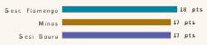
Gol: Lorena, Natascha e Lelê. Defesa: Tarciane, Lauren e Isa Haas. Meio: Angelina e Yaya. Ataque: Bia Zaneratto, Priscila, Gio Garbelini, Amanda Gutierres e Gisele, estreante.
Entre os destaques: Alison dos Santos, Rebeca Andrade e Lucas Pinheiro Braathen, 1º ouro do Brasil em Jogos de Inverno.
Lesão do ligamento cruzado anterior é mais frequente em atletas mulheres. Aquecimento neuromuscular de 15 a 20 minutos reduz o risco.
GTA VI. Lançado em 19/11, o jogo teria vendido cerca de 19,05 milhões de unidades e faturado US$ 1,84 bilhão até o dia do lançamento, segundo estimativa da Sensor Tower; cerca de 75% no PlayStation. São estimativas de terceiros. A nota no Metacritic é 99, com 147 críticas. Não há data para a versão de PC nem para o modo online.
The Game Awards. A cerimônia é em 10/12, às 21h30 de Brasília. GTA VI lidera com 8 indicações, inclusive Jogo do Ano; Control Resonant e Resident Evil Requiem têm 6 cada (Canaltech e O Povo, 17/11).
Steam. A loja não fará promoção geral na Black Friday, só destaques nas Ofertas Especiais. A Promoção de Inverno vai de 17/12 a 4/1/2027.
Cinema. Vingadores: Doutor Destino estreia no Brasil em 17/12, com pré-estreias em 16/12. Até 2/11, a pré-venda passava de 1,05 milhão de ingressos, o 3º maior volume do mundo, segundo levantamento citado pelo Legião dos Heróis. No ranking da Ingresso.com de 12 a 15/11, Os Farofeiros 3 e Godzilla Minus Zero estavam entre os mais vendidos.
Curiosidade do céu. Urano está em oposição hoje: fica do lado oposto ao Sol e passa a noite inteira no céu, em Touro. Com magnitude 5,6, só se vê a olho nu em céu muito escuro; a Lua quase cheia, a cerca de 6°, atrapalha. Use binóculo e aplicativo de mapa celeste.
Urano gira "deitado", com eixo inclinado em cerca de 98°. Cada polo tem cerca de 42 anos de dia e 42 de noite ao longo da órbita de 84 anos.
Hiperfoco em jogo de mundo aberto come o sono. Antes de começar, programe um alarme de parada no relógio, longe do controle, e não jogue em véspera de plantão. A tirinha da pág. 23 conta o resto.
Urano vem do grego Ouranós, o céu personificado. Foi o primeiro planeta descoberto com telescópio, por William Herschel, em 1781.
O ano. De janeiro a outubro, o Brasil emplacou 4.722.650 veículos de todas as categorias, alta de 12,62%, o 2º melhor resultado da série, atrás de 2011. Só em outubro foram 489.119. A Fenabrave elevou a projeção de 2026 de 8,6% para 12,8% de crescimento, cerca de 5,6 milhões de unidades (Correio da Manhã, 4/11).
Eletrificados. Os veículos eletrificados somaram 524.766 unidades no ano, alta de 130%. A BYD emplacou 24.114 carros em outubro, 4ª marca do país. No Nordeste, foi a 2ª marca e a líder no varejo, com 5.183 unidades no mês. A fábrica de Camaçari, na Bahia, passou de 150 mil veículos produzidos (Mecânica Online).
Novembro. Até o dia 18, o ranking de automóveis e comerciais leves tinha Fiat Strada, VW Polo, VW Tera, Fiat Argo, VW T-Cross e Fiat Mobi; o BYD Dolphin Mini aparecia em 7º, com 4.209.
Juros. A Selic de 13,75% mantém o financiamento caro. A diferença de meio ponto ao mês pesa: num carro de R$ 50 mil em 48 parcelas, vai de cerca de R$ 70,5 mil para R$ 78,2 mil no total, só de juros. Pág. 21.
Recall. Nenhum recall novo foi confirmado nesta semana pelo jornal. Antes de comprar usado, consulte a placa ou o chassi no portal de recalls do governo federal.
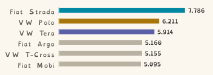
Laudo cautelar, consulta de débitos e multas no Detran, histórico de recall e test-drive com mecânico de confiança. Pagamento só depois do documento transferido.
Antes de comprar, mapeie carregadores no caminho a Fortaleza e confira a garantia da bateria e o preço do seguro.
Golpe provável. O preço atual fica entre R$ 5.400 e R$ 5.800 (Canaltech). Desconto acima de 50% em lançamento é isca de loja falsa.
Golpe. Prêmio, empréstimo ou restituição que pede "taxa de liberação" antes é fraude.
Golpe do falso gerente. Banco não pede senha, código por SMS nem transferência para "conta segura".
Golpe. O FGC não cobra taxa, não usa intermediário e não chama por WhatsApp ou SMS. O pedido é só pelo app oficial.
Risco de receptação. Sem nota fiscal e com preço baixo demais, o aparelho pode ser roubado ou comprado com cartão clonado.
Golpe. Quem teve dados expostos recebe contato que cita CPF e endereço para parecer legítimo. Desligue e ligue você para o canal oficial.
Dados vazados. Em novembro, a Caixa Vida e Previdência informou exposição de dados de 7,6 milhões de clientes, como nome, CPF e endereço, sem senhas nem saldos (O Povo, 17/11). Dados assim deixam o golpe mais convincente.
Celulares e cartões. Em 9/11, as polícias do Ceará e de Alagoas fizeram prisões em Ubajara numa investigação sobre compras de celulares com cartões clonados em lojas de várias cidades, inclusive Sobral; o prejuízo estimado é de R$ 800 mil (Diário do Nordeste). Confira a fatura e conteste o que não reconhecer.
Pix. O MED 2.0, obrigatório desde fevereiro, rastreia o dinheiro que se espalha por várias contas e ajuda a bloquear valores. Confira o nome do recebedor, não só a chave, e reduza o limite noturno (Correio 24 Horas, 16/11).
Banco Master. O FGC paga os credores do banco liquidado em 2025 pelo aplicativo, com biometria. O prazo para pedir vai até 18/11/2030 (InfoMoney).
Oferta com pressa é o principal sinal de golpe. Anote, espere 72 horas, compare preço e confira o CNPJ.
| Produto | Referência | Bom negócio | Veredito 360 |
|---|---|---|---|
| iPhone 17, 256 GB | R$ 5.400 a 5.800 (lançou a R$ 8.000) | Até R$ 5.100; menor já visto R$ 4.864 | 🟡 Só se o atual tiver problema |
| PS5 Digital | R$ 4.599,90 (preço Sony desde 2/4) | Sem desconto oficial confirmado | ⏳ Esperar |
| PS5 com leitor · Pro | R$ 5.099,90 · R$ 7.499,90 | Idem | ⏳ Esperar |
| TV TCL C6K 55" | R$ 2.800 a 3.000 no Pix | Expectativa de R$ 2.400 | 📝 Lista: só se a TV atual quebrou |
| Galaxy S26 | — | R$ 3.500 a 3.700 | 🟡 Decidir após 72 h |
Pix faz 6 anos. De janeiro a outubro, o Pix movimentou R$ 35,2 trilhões, alta de 24%, com 168 milhões de usuários; o recorde diário foi de 319,7 milhões de operações em 6/11. A Resolução BCB 587 cria a cobrança híbrida, com boleto e QR Pix, a partir de fevereiro de 2027, e estende o Pix Automático às contas-salário em julho de 2027. Publicidade em comprovantes do Pix fica proibida a partir de março de 2027.
Sistemas. iPhone: iOS 27.2.1, com correções da Siri; o 27.3 está em beta pública. Windows 11: atualização de novembro com Cloud Rebuild e a prévia KB5132057, de 19/11. Pixel: Android 17 QPR2. Pág. 11.
Trânsito. A Carteira Digital de Trânsito virou CNH do Brasil e passou a integrar pagamento de pedágio sem cancela (free flow), segundo o Portal do Trânsito.
Compra pela internet pode ser desfeita em até 7 dias após o recebimento, com devolução integral (CDC, art. 49).
A doutrina. Para o investidor conhecido como Bastter, patrimônio se acumula: a renda verdadeira é a do trabalho, e o que sobra dela vira aporte, todo mês, por décadas. A ideia central é poupar um percentual fixo da renda, sem tentar adivinhar juros, câmbio ou bolsa.
Renda fixa. Nessa visão, a renda fixa preserva o poder de compra e dá estabilidade: Tesouro Selic, CDB de banco sólido dentro do limite do FGC e títulos atrelados à inflação. A doutrina também inclui ações; este jornal não trata de renda variável e não recomenda investimento.
Não acertar a hora. Na segunda, o dólar tocou R$ 6,006; na terça, fechou a R$ 5,911. Quem decide no susto compra no pico. O aporte feito no dia do salário, sempre, dispensa a manchete.
Os números. Selic de 13,75% (Copom em 8 e 9/12). Poupança: 0,5% ao mês + TR; com a TR de 0,1196%, quem faz aniversário em 1º/12 recebe 0,6202% no mês, e o acumulado de 12 meses até 1º/11 foi de 8,29%. Tesouro em 17/11: Selic 2031 a Selic + 0,1083%; prefixado 2029 a 14,98%; IPCA+ 2045 com juros semestrais a IPCA + 7,52%. Taxas de 24/11 não foram reconferidas.
Imposto. Vale a tabela regressiva: 22,5% até 180 dias, 20% até 360, 17,5% até 720 e 15% acima disso. LCI e LCA seguem isentas para pessoa física; a MP 1.303/2025, que mudaria isso, perdeu a validade. LCI e LCA pós-fixadas têm carência mínima de 6 meses.
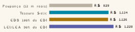
Garante até R$ 250 mil por CPF por instituição, com teto de R$ 1 milhão a cada 4 anos. Cobre CDB, LCI, LCA e poupança. Tesouro Direto é dívida do governo, fora do FGC.
1º reserva de emergência; 2º contas de janeiro (IPVA, IPTU, material escolar); 3º um valor pequeno e combinado para gastar sem culpa.
Conteúdo educativo. O jornal não é consultor financeiro e não recomenda produtos. Decisão relevante? Regra das 72 h e profissional certificado.
Imóvel. Em 13/11, a vice-presidente de Habitação da Caixa disse que o banco estuda aumentar os juros do crédito imobiliário, a depender do orçamento de 2027. Não há decisão nem data (Seu Dinheiro). Quem já negocia deve pedir a simulação por escrito, com o CET.
Terreno. Antes de qualquer sinal: matrícula atualizada no cartório de registro de imóveis, certidões do vendedor, situação na prefeitura e conferência dos limites no local. Terreno barato sem matrícula é risco, não oportunidade.
Veículo. Carro de R$ 50 mil em 48 parcelas: a 1,5% ao mês, paga-se cerca de R$ 70,5 mil; a 2,0%, cerca de R$ 78,2 mil. São taxas de exemplo; peça a sua por escrito. A diferença paga um ano de seguro.
Compra e revenda. O teto do MEI é de R$ 81 mil por ano; a Lei Complementar 238/2026 prevê R$ 110 mil em 2027. O DAS de 2026 parte de R$ 81,05, mais ICMS ou ISS. Revenda pede nota de origem: comprar sem procedência, a preço muito baixo, pode configurar receptação (art. 180 do Código Penal). O CDC vale para quem vende com habitualidade.
IPVA 2027. O Ceará ainda não divulgou o calendário. Em 2026, a cota única até 30/01 teve 5% de desconto, mais até 5% do programa Sua Nota Tem Valor.
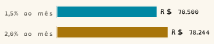
Contrato lido em casa, CET por escrito, regra das 72 h e advogado ou contador quando o valor for alto.
O dólar chegou a R$ 6,006 na segunda (23) e fechou a terça (24) em R$ 5,911, com a notícia da sanção do pacote fiscal (InfoMoney e Agência Brasil).
A Câmara manteve o texto do Senado por 353 a 128. A sanção foi relatada pela imprensa, mas a publicação oficial não foi localizada no fechamento (pág. 2).
O Brent subiu 2,27% com incidentes em Ormuz, enquanto o real se valorizou com o pacote fiscal (págs. 4 e 5).
O Flamengo é campeão brasileiro desde 21/11; o Palmeiras tem a final da Libertadores no sábado e a da Copa do Brasil em 6/12. A Black Friday é na sexta (27). GTA VI saiu em 19/11, 13 anos depois de GTA V. Hoje é o Dia Nacional do Doador de Sangue.
A máquina mudou a morte. Por milênios, morrer era parar de respirar e de bater o coração. O ventilador mecânico separou as duas coisas. Em 1959, os neurologistas franceses Mollaret e Goulon descreveram o coma dépassé, o coma "além do coma", em que o cérebro havia parado e o corpo seguia ventilado.
A Igreja e o anestesista. Em 24/11/1957, Pio XII disse a anestesistas que definir o momento da morte cabe à medicina, e que meios extraordinários de manter a vida não são obrigatórios. A fala abriu espaço para o debate médico.
Harvard, 1968. Um comitê da Universidade Harvard publicou no JAMA critérios para o "coma irreversível" como nova definição de morte. Meses antes, em dezembro de 1967, Christiaan Barnard fizera o primeiro transplante de coração; no Brasil, a equipe de Euryclides de Jesus Zerbini fez o primeiro em maio de 1968.
As religiões. João Paulo II, em 2000, aceitou o critério neurológico como compatível com a moral católica. O Conselho da Academia de Fiqh Islâmico, em 1986, reconheceu a morte encefálica. No judaísmo, o Rabinato Chefe de Israel aceitou o critério em 1986 com condições, enquanto parte dos rabinos ortodoxos ainda o rejeita. No Japão, a lei de 1997 aplicou a morte encefálica apenas a quem doa órgãos.
No Brasil. A Lei 9.434/1997 e a Resolução CFM 2.173/2017 regem o diagnóstico. A lei exige que o corpo do doador seja recomposto com dignidade e entregue à família.
| Afirmação | Situação |
|---|---|
| Morte encefálica é morte | ✅ Consenso médico e legal |
| "Se o coração bate, está vivo" | 🔴 Mito: o coração bate com ventilação |
| "O corpo do doador fica deformado" | 🔴 A lei exige recomposição |
| "Minha religião proíbe doar" | 🟡 A maioria apoia; há correntes contrárias |
| Rezar pela família ajuda no luto | 🟡 Tradição com apoio em estudos de espiritualidade |
Comunique por etapas, em sala reservada, sem pressa. Pergunte sobre fé e valores com a ferramenta FICA (fé, importância, comunidade, ação no cuidado), de Christina Puchalski. Ofereça capelania de qualquer tradição. Doação é pauta da equipe de captação, separada do diagnóstico.
No interior do Ceará, velar em casa, rezar o terço e chamar a rezadeira fazem parte da despedida. Respeitar o rito ajuda a família a aceitar a notícia.
O manual. Publicado por volta de 1486–1487, o Malleus Maleficarum, do dominicano Heinrich Kramer, associou a bruxaria às mulheres e circulou graças à imprensa recém-inventada. Teólogos da época o criticaram, mas o livro virou referência em tribunais.
A escala. Historiadores estimam de 40 mil a 60 mil execuções na Europa entre 1450 e 1750, cerca de 80% de mulheres, muitas idosas, viúvas ou curandeiras. Os picos coincidiram com guerras, fome e crises religiosas.
Salem, 1692. Na colônia de Massachusetts, 19 pessoas foram enforcadas e um homem morreu esmagado sob pedras. A hipótese do ergotismo, intoxicação por fungo do centeio, foi proposta em 1976 e é contestada: trate como hipótese.
No Brasil. A primeira visitação do Santo Ofício chegou à Bahia em 1591. Curandeiras, benzedeiras e quem mantinha ritos africanos e indígenas estavam entre os denunciados.
Medicina tradicional hoje. A OMS mantém um Centro Global de Medicina Tradicional em Jamnagar, na Índia, desde 2022, e a CID-11 tem um capítulo de medicina tradicional. A regra da OMS é a mesma deste jornal: segurança e evidência para cada prática.
As irmãs Mirabal, mortas em 25/11/1960, não foram acusadas de bruxaria, mas de oposição política. Os dois casos têm a mesma raiz: o poder que decide quem é perigosa. Lembrar ambos é recusar o boato como prova.
Nas tradições que usam o termo, "magia branca" é a intenção de proteger e curar, nunca de ferir. Não é tratamento médico, não substitui remédio e não deve cobrar por "desfazer trabalho" com urgência: isso é sinal clássico de golpe.
"Fetiche" vem do português feitiço: navegadores portugueses chamavam assim os objetos sagrados da África ocidental, e a palavra voltou à Europa pelo francês.
Torá · Levítico 19:16
"Não ficarás parado diante do sangue do teu próximo."
A lei que proíbe a fofoca no mesmo versículo também proíbe a omissão: ver o perigo e seguir adiante é falta grave.
Talmude · Sanhedrin 37a
"Quem salva uma vida salva um mundo inteiro."
Cada pessoa vale um mundo. É a ideia por trás de doar sangue: um gesto pequeno, muitas vidas.
Alcorão · 5:32
Quem salva uma vida é como se salvasse toda a humanidade.
O texto ecoa o Talmude e faz da proteção da vida um dever comum.
Bíblia · Provérbios 31:8–9
"Abre a tua boca a favor do mudo."
Falar por quem não consegue pedir ajuda é parte da justiça, não um favor.
Confúcio · Analectos 2:24
Ver o que é justo e não fazê-lo é falta de coragem.
Para o mestre chinês, a omissão diante do certo é covardia, não prudência.
Buda · Dhammapada 129–130
Todos tremem diante da violência; vendo-se no outro, não fira.
A não violência começa pela empatia: o outro sente o que eu sentiria.
As seis tradições tratam a honra como algo que se prova na hora difícil. Não basta não fazer o mal; é preciso agir quando o outro sangra, apanha ou não tem voz. Em linguagem de hoje: doar sangue, acolher quem pede socorro, chamar ajuda, testemunhar. A coragem honrada não é a do herói solitário, e sim a de quem aciona a rede certa. No plantão, isso tem nome técnico: notificação, comunicação e encaminhamento.
Em 1960, as irmãs Mirabal enfrentaram uma ditadura sabendo do risco. A honra delas virou data mundial. Coragem moral raramente é confortável na hora; costuma ser reconhecida depois.
Em que situação recente você viu algo errado e ficou parado? O que faria diferente com o que sabe hoje?
Vem do latim cor, coração, pelo francês antigo corage. Coragem é agir com o coração, apesar do medo.
A boa intenção some se não vira ação marcada. Transforme o "vou doar sangue" em evento no calendário, com endereço e horário, e peça a um amigo para ir junto.
Uma bolsa de sangue, uma ligação para o 180, uma ficha de notificação bem preenchida. A honra mais útil costuma ser discreta.
O efeito espectador. Em experimentos de 1968, John Darley e Bibb Latané mostraram que, quanto mais pessoas presenciam uma emergência, menor a chance de alguém agir, porque cada um espera o outro. O antídoto é simples: apontar uma pessoa e dar uma tarefa ("você, ligue para o 190").
Como ajudar uma mulher em risco. Ouça sem julgar e sem pressionar. Não confronte o agressor. Ofereça o Ligue 180, que orienta e encaminha, e o 190 em perigo imediato. Respeite o tempo dela: sair de uma relação violenta é um processo.
A lei com nome de mulher. A Lei 11.340/2006, que completou 20 anos em 2026, leva o nome de Maria da Penha Maia Fernandes, farmacêutica de Fortaleza que ficou paraplégica após agressão do então marido, em 1983. Em 2001, a Comissão Interamericana de Direitos Humanos responsabilizou o Brasil por omissão no caso. Ela fundou o Instituto Maria da Penha, na capital cearense. Pág. 31.
No plantão. Notificar a violência atendida é obrigação legal, não denúncia contra a paciente. Explique isso a ela, registre com objetividade, ofereça a rede e acione o serviço social. Pág. 7.
A palavra empenhada. Quem marca para doar sangue e vai cumpre duas promessas: a feita a si e a feita a quem vai receber. Leve um amigo e transforme a doação em hábito anual.
Uma frase muito atribuída a Martin Luther King Jr. diz que, no fim, lembraremos menos as palavras dos inimigos e mais o silêncio dos amigos. A frase vale para casa, trabalho e plantão.
Noites quentes. Um estudo com 765 mil respostas nos EUA, publicado na Science Advances em 2017, associou noites mais quentes que o normal a mais noites de sono insuficiente, com efeito maior entre idosos e pessoas de menor renda.
Água e atenção. Revisões sobre hidratação indicam que perdas de 1% a 2% do peso em água já podem piorar atenção e humor em parte das pessoas. No plantão longo e quente, a sede chega tarde: beba em horários marcados.
Quarto. Ventilação cruzada à noite, cortina fechada de dia, banho morno antes de deitar e roupa de cama leve ajudam a baixar a temperatura do corpo, gatilho natural do sono.
Humor. Calor, fome e cansaço deixam a paciência curta. Antes de responder a uma mensagem difícil, use o teste HALT, ao lado.
Gratidão. Anotar três coisas boas do dia, por algumas semanas, melhorou o bem-estar em estudos de psicologia positiva, com efeito pequeno a moderado. Custa dois minutos.
| Beber água em horários marcados | ✅ Prático e seguro |
| Banho morno antes de dormir | ✅ Ajuda a iniciar o sono |
| "Água gelada faz mal no calor" | 🟡 Sem evidência de dano em quem é saudável |
| Cochilo de 20 minutos pós-plantão | ✅ Útil, sem passar de 30 |
Estou com Hungry (fome), Angry (raiva), Lonely (sozinho) ou Tired (cansado)? Se sim, resolva isso primeiro e responda depois.
Oferecer água a quem chega, chamar o técnico de enfermagem pelo nome e agradecer a quem doou sangue. Gentileza em dia quente vale em dobro.
Garrafa de 1 litro com marcações por horário, sempre no campo de visão. O que não se vê, o cérebro com TDAH esquece.
1 minuto: um copo d'água. 1 minuto: três respirações lentas na sombra. 1 minuto: escrever a próxima tarefa em uma linha. Repita na troca de plantão.
Com o Sol em Sagitário desde 22/11 e a Lua em Gêmeos na astrologia tropical, o dia pede curiosidade com foco: ler muito, mas terminar uma coisa só.
O juazeiro, árvore da Caatinga, segura as folhas verdes na seca graças a raízes profundas. Lição: na fase difícil, cuide da raiz (sono, comida, gente boa) e o resto aguenta.
A pomba asa-branca deixa o sertão quando a seca aperta e volta com a chuva. Partir para se proteger também é sabedoria.
Tecidos claros e leves, cortina fechada à tarde e uma planta perto da janela. Mesa limpa, uma tarefa à vista.
Converse em casa sobre respeito no namoro e no grupo de amigos: ciúme que controla celular não é cuidado. Crianças aprendem limites vendo os adultos.
Parceria saudável tem liberdade, acordo sobre dinheiro e conversa sem medo. Se houver medo, procure ajuda: Ligue 180.
No iOS 27.2 ou posterior, peça "Siri, lembre-me de beber água a cada duas horas hoje". Confira em Lembretes se ficou certo.
Ajustes › Foco › crie "Plantão" liberando só hospital e família. Ative pelo Centro de Controle.
Com a atualização de novembro, o Windows 11 pode se reinstalar pelo Windows Update, sem pendrive. Faça backup antes.
Na Black Friday, copie o CNPJ do rodapé do site e consulte no portal da Receita. Loja sem CNPJ é loja para evitar.
Se você cria site de causa, mostre CNPJ, nome do recebedor e prestação de contas. Transparência é o que separa a causa do golpe.
Produto feito com IA (e-book, arte, planilha) vende melhor e com menos risco quando diz que usou IA e quem revisou. Revise fatos e direitos de imagem.
Na sexta, abra só a lista. Cada item fora dela vai para um bloco "talvez", revisto depois de 72 h.
Leve documento, coma antes, hidrate-se. Agende o retorno no calendário assim que sair do hemocentro.
Agência Brasil, InfoMoney, CNN Brasil, Money Times, O Povo, Diário do Nordeste, Prefeitura de Sobral, Hemoce, ECDC, OMS, UKHSA, INCA, BCB, IBGE, Tesouro, Fenabrave, Canaltech, MacRumors, 9to5Mac, Pureinfotech, CFM e diretrizes citadas em cada página.
Pacote fiscal à sanção, dólar abaixo de R$ 6, Black Friday na sexta e 13º até segunda. Proteja a atenção e o dinheiro: lista, 72 h e aporte primeiro.
Hoje, em 5 minutos: escreva a lista da Black Friday com teto de gasto e marque no calendário a doação de sangue.
Comprar no impulso, clicar em link de "90% off", abrir protocolo de morte encefálica sem pré-requisitos e dar iodo antes da tionamida.
Jornal Diário 360 · Radar 360 Circunstancial · edição nº 019 · quarta-feira, 25/11/2026 · 31 páginas · fechamento na noite da véspera (24/11). ALDENIR ROCHA DE OLIVEIRA FILHO · PROJETO 360X. Produção: Agente Editorial 360, com o Claude (Anthropic). Gráficos, tirinhas e ilustrações originais; nenhuma foto de terceiros. Notícias resumidas com fontes datadas. Conteúdo de saúde educativo: siga o protocolo institucional. Conteúdo financeiro educativo: o jornal não é consultor financeiro. O jornal não toma partido. Correções: informe pela página do Jornal 360 no site.
Por que agora: Semana do Doador de 23 a 29/11; hoje é o Dia Nacional do Doador (Hemoce, 18/11).
Quem é: hemocentro público estadual.
Como ajudar: Centro de Convenções, Rua Padre Anchieta, 108; seg–sex 8h–19h, sáb 8h–12h. 16 a 69 anos, 50 kg ou mais, documento.
✔ Conferido no site oficial em 24/11/2026 · sem PIX, sem custo
Por que agora: 29 feminicídios no Ceará de janeiro a setembro (Supesp, via Diário do Nordeste, 9/11).
Quem é: ONG de educação e pesquisa contra a violência doméstica.
Como doar: botão "Doe" no site oficial. Em perigo, Ligue 180 ou 190.
⚠ Site sem chave PIX: use só o canal oficial (conferido em 24/11/2026)
Por que agora: 146.425 famílias afetadas e 47 dos 62 municípios em emergência (Defesa Civil do AM, 2/11, via The Rio Times).
Quem é: agência da ONU para a infância; com a Cáritas, faz comitês de água no estado.
⚠ PIX não conferido hoje: doe só pelo site oficial
Por que agora: 11.504 casos e 5.630 mortes na RD Congo até 17/11 (ECDC, 19/11); surto fora de controle, diz o Africa CDC.
Quem é: federação das Cruzes Vermelhas; apelo de 29,5 milhões de francos suíços para enterros seguros.
⚠ Sem PIX: doação internacional pelo site oficial
| Quem | O que divulgou | Fonte e data | 📸 Comprovação | |
|---|---|---|---|---|
| Correios · Papai Noel dos Correios | 80 mil cartinhas adotadas e 160 mil à espera de padrinho. | Agência Gov, 18/11 | ||
| CRIO + Associação Nossa Casa · Fortaleza | Mutirão urológico gratuito no sábado (28), 8h–12h, até 100 consultas. | O Povo, 12/11 | ||
| Prefeitura de Sobral · Hospital Estevam Ponte | Mutirão de túnel do carpo; ultrassom e eco em 8 postos. | sobral.ce.gov.br, 24/11 | ||
| Cáritas Brasileira + UNICEF · Amazonas | Alerta precoce e comitês de água em 3 cidades do Amazonas. | UNICEF, 3/11 |
Reprodução do que cada fonte divulgou, sem conferência independente; não é endosso nem publicidade paga. 📸 O QR abre fotos ou relatório na página da própria fonte; ícones originais, sem imagens de terceiros.
Ajuda de Boa: causas com PIX conferido na fonte.
Auditoria das Coisas 360X: sugira uma auditoria.
Hemoce de Sobral até domingo (29). Hospital do SUS não cobra por PIX nem WhatsApp: desconfie de "falso médico".